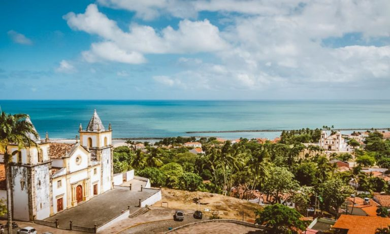

A Casa da Cultura de Pernambuco, Luiz Gonzaga, encontra-se no prédio onde funcionou a Casa de Detenção de Recife durante pouco mais de 100 anos.

Também conhecida como Praça Barão do Rio, a Praça do Marco Zero foi o local de fundação de Recife e é o início da contagem das distâncias da cidade. É uma região de forte movimento, principalmente na época do carnaval.
Para quem gosta de curtir um visual, o Mirante do Alto da Sé é perfeito para observar a cidade de cima. Para acessá-lo, é necessário pegar um elevador panorâmico ou subir pela escadaria. Localizado em Olinda, na Grande Recife, esse passeio em Recife oferece uma vista fantástica da cidade.